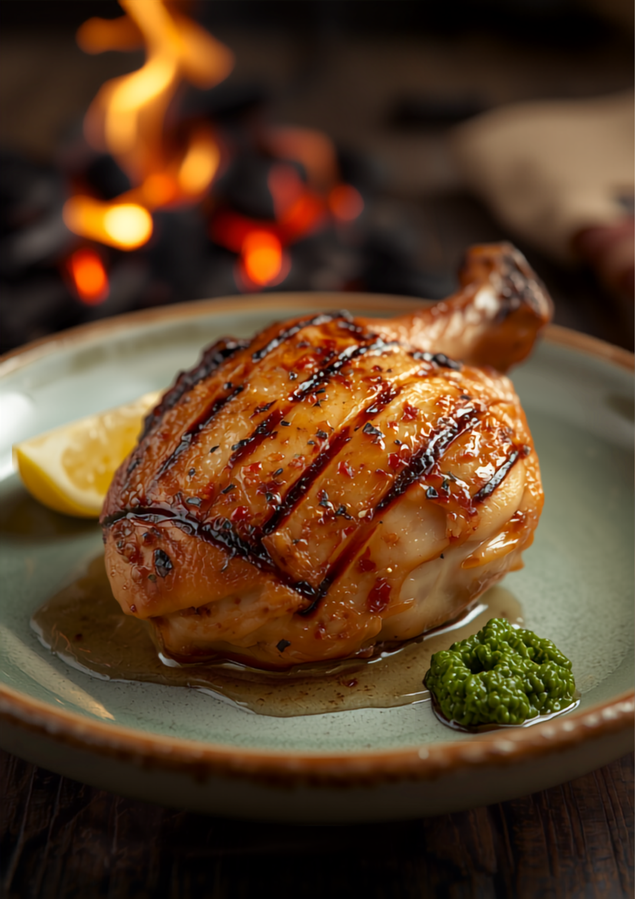

Meiji — Shōwa — Now
室見川と田園を望む、移築された明治の古民家。昭和三十九年から、親子三代でつづく一軒。
屋根の形、少し上がったところにある玄関。どこか物語の中に迷い込んだような佇まい。店内はとにかくレトロで、ゆっくりと時間が流れます。
料理の提供に多少時間がかかっても、気にならない。そういう場所です。
昭和三十九年の創業から、この場所で暖簾を守りつづけてきました。おじいさまから、お父さまへ。そして——。
変わらないのは、目の前の室見川と田園の景色と、出来立てを出したいという想いだけ。
看板は、鶏もも肉の塩焼き。皮の部分はカリカリ、身の部分はフワフワ。何本でも食べられそうな一皿です。
お手製のお酢に柚子胡椒を溶いて。添えられたレモンのフルーティーさまで、印象に残ります。

炭火でじっくり。皮はカリカリ、身はフワフワ。
鶏ももの塩焼きが最高でした。皮の部分がカリカリで、身の部分はフワフワ。つけダレと鶏肉の相性がバッチリ。目の前の川と田園風景に癒されながら、ステキなランチタイムを過ごせました。
店内はとにかくレトロ。昭和な雰囲気で、ゆっくり時間が流れます。唐揚定食は味がしっかり、付け合せの煮卵・ポテサラ・鶏レバーの生姜煮も全部が美味しい。次は炭火焼にチャレンジしたい。
完全予約制なのは、じっくり火を入れるものもあるため。出来立てを食べてもらいたいという店主さんのこだわり。都会から離れ、景色を楽しみながら味わう——そんな時間でした。
reservation
メニューによっては、じっくり火を入れるため二十分ほどお待たせします。出来立てを召し上がっていただきたいから、完全予約制にしています。まずは、お電話でご予約を。
ご高齢のご主人が焼いています。急な休業の場合もございます。